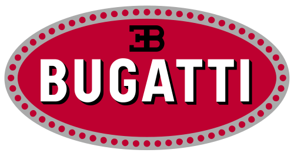

Bienvenidos a nuestro portal web donde podras ver los fabricantes de autos elegidos en nuestra empresa.
en este portal web te recomendaremos algunas marcas de auto.
Renault

Renault es un fabricante francés de automóviles tanto de lujo como de turismo, vehículos comerciales y
automóviles de carreras. Es la marca fundacional del Groupe Renault, conglomerado
automotriz que incluye en su paquete accionario a las marcas Alpine, Dacia, Samsung y Lada,
a la vez de ser miembro mayoritario de la alianza mundial Renault-Nissan-Mitsubishi
De 1979 a 1987, Renault poseyó la mayor parte de American Motors Corporation y Jeep que
posteriormente fue vendida a Chrysler Corporation en marzo de 1987. En 1986 el gobierno
francés se planteó su privatización y en 1996 Renault ya estaba parcialmente privatizada.
En enero de 2001, Renault vendió su división industrial a AB Volvo, que renombró como Renault
Trucks en 2002, pasando a ser su accionista mayoritario, hasta la venta de su paquete de
acciones en 2010.
Citroen
Citroen es una marca francesa constructora de automóviles fundada en 1919 por André Citroën,
propiedad de Stellantis. La marca creó entre otros modelos el utilitario Citroën H, el Citroën
2CV, el Citroën Mehari, el Citroën DS y también el Citroën CX
Desde el año 1976 Citroën forma parte del Groupe PSA. Destacan también sus vehículos
comerciales y de competición.
El logotipo de Citroën consiste en dos galones o espiguillas invertidas superpuestas
y se inspiran en un invento de André, referente a un engranaje con los dientes en forma de V,
que fueron montados en modelos de altas prestaciones de Citroën,
y que aventaja en prestaciones a los engranajes de diente plano.
Peugeot
Peugeot es una marca de automóviles francesa con más de 200 años de historia, especializada en la fabricación de turismos, vehículos comerciales, automóviles de carreras, servicios de movilidad como alquiler de vehículos, bicicletas, scooters, así como útiles de cocina como saleros, pimenteros y molinillos de café, propiedad de Stellantis.2 Los molinillos fueron su primer producto y más tarde se dedicaría a la fabricación de automóviles con el nombre «Les fils de Peugeot frères» (Hijos de los hermanos Peugeot).

Bugatti

Bugatti es una marca de automóviles francesa de gran lujo y competición fundada en el año 1909 por
Ettore Bugatti en Molsheim, localidad actualmente en Francia y por entonces perteneciente al
Imperio alemán. En la actualidad es propiedad del Grupo Volkswagen.
El fundador Ettore Bugatti nació en Milán, Italia, y la compañía de automóviles que lleva su nombre fue fundada en 1909 en Molsheim, ubicada en la región de Alsacia, que fue parte de Imperio alemán desde 1871 hasta 1919. La compañía era conocida tanto por el nivel de detalle de la ingeniería de sus automóviles, como por la elegante forma en que se ejecutaban los diseños.